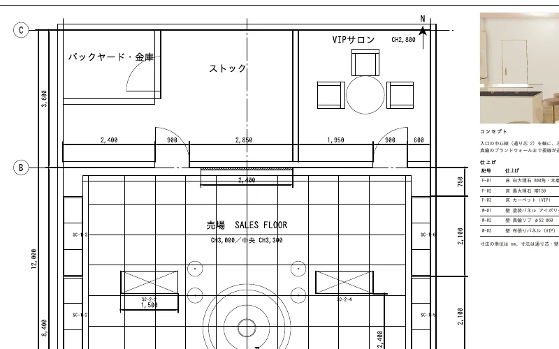

3D・図面・CADNo.01 内装計画／3D・CADデータ・図面
宝飾・時計ブティック 内装計画
- どんな資料か
- 約115㎡の路面ブティック（提案例のブランド）の内装の図面と、同じ数値から作った立体です。
- 使う場面
- 店舗の内装計画を、施主や施工者と図面と立体の両方で確かめたいとき。CADデータはそのまま次の作図に使えます。
- 入っている内容
- 1枚目は平面図（1/60）と仕上げ表・什器表（ショーケース3種・家具2種と個数）、計画の考え方。2枚目は天井伏図（天井高・間接照明・スポットの位置）とCADデータの構成（レイヤー11種・部品ブロック6種）、実務で先に確かめることの一覧。DXFは R2018・mm 単位です。
- 納める形式
- PDF A3・2枚
- DXF
- 3D（ブラウザ）